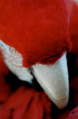

Growing up, I loved the arts. As a little girl, I always loved painting and drawing, but when I was in high school I became very fascinated with photography. The idea of capturing a moment that would never be the same, was incredible to me.
My mother is also a photographer, and when I first started taking pictures, I used her Minolta. In 2002, at the end of my freshman year, I bought my own 35mm.
I've heard people say there are two kinds of photographers: Nikon users and Cannon users. I couldn't agree more. I am a Nikon user. My first camera was a Nikon N75. I loved that camera and took some great pictures, but after a couple of years, it was time to upgrade.
Deciding to stay in the Nikon family, I bought myself a Nikon D70s. I consider it my baby, and I won't let just anyone touch it. And by touch it, I mean look at it while I am standing there.
I've bought some lenses and will buy some more in the future, but photography is an expensive hobby. Although I spend all of my birthday money on camera equipment, I wouldn't trade my hobby for anyone else's.